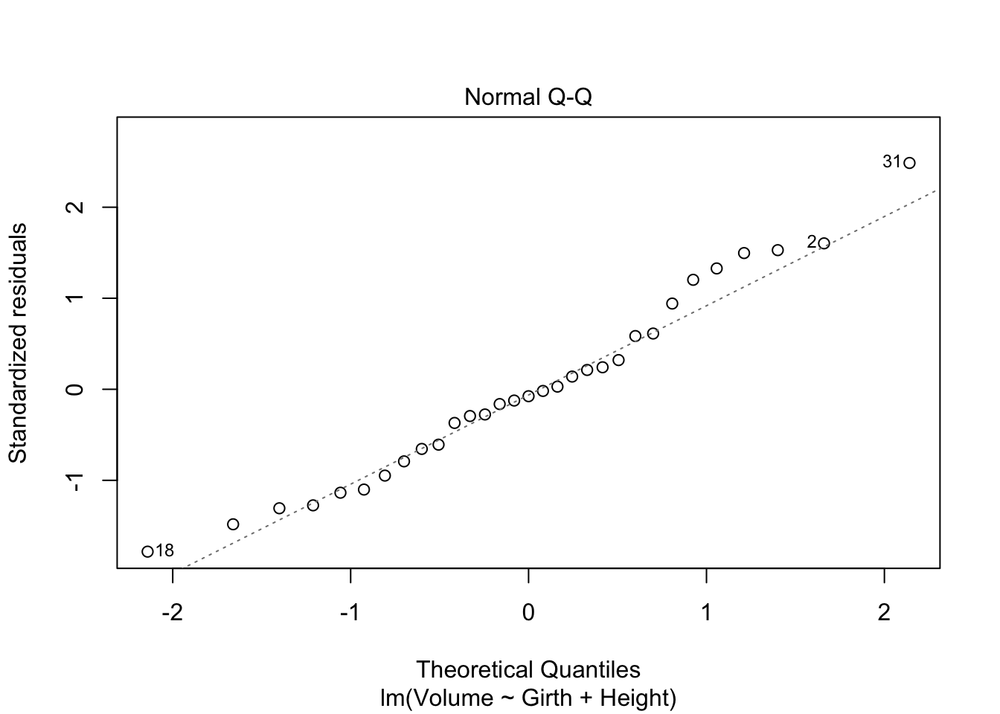
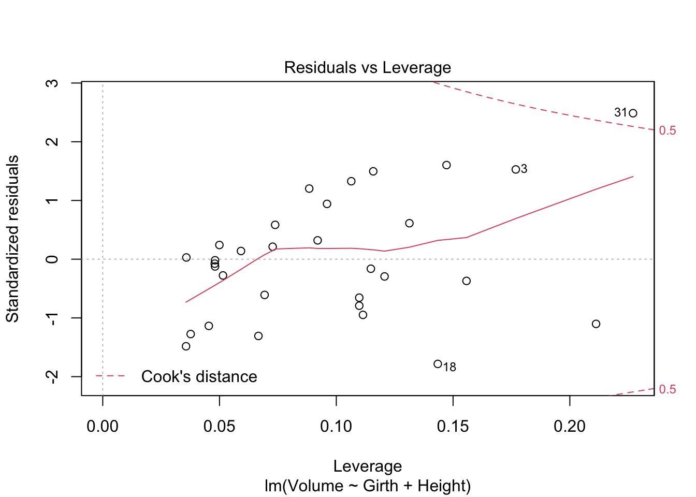
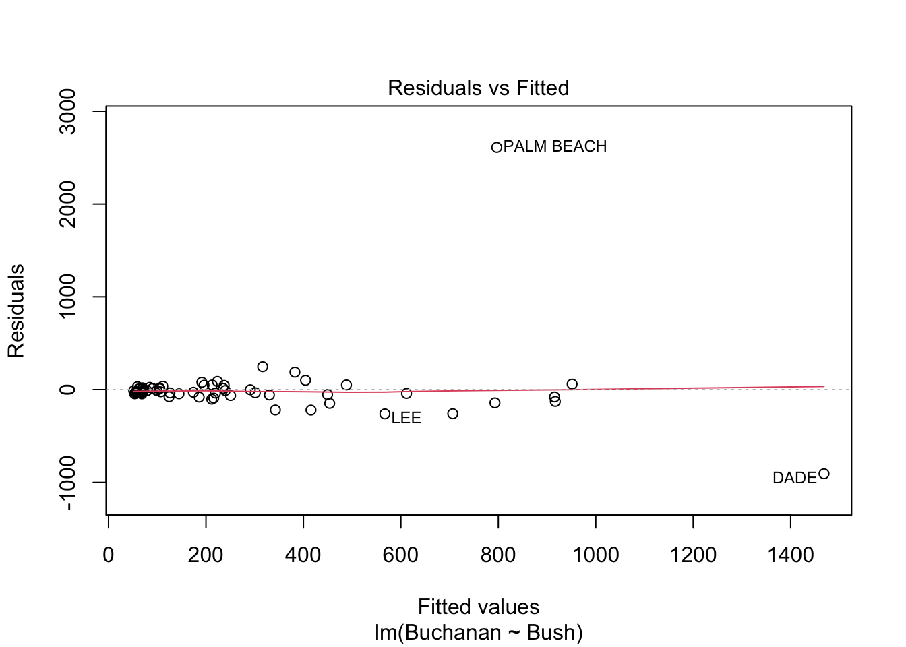
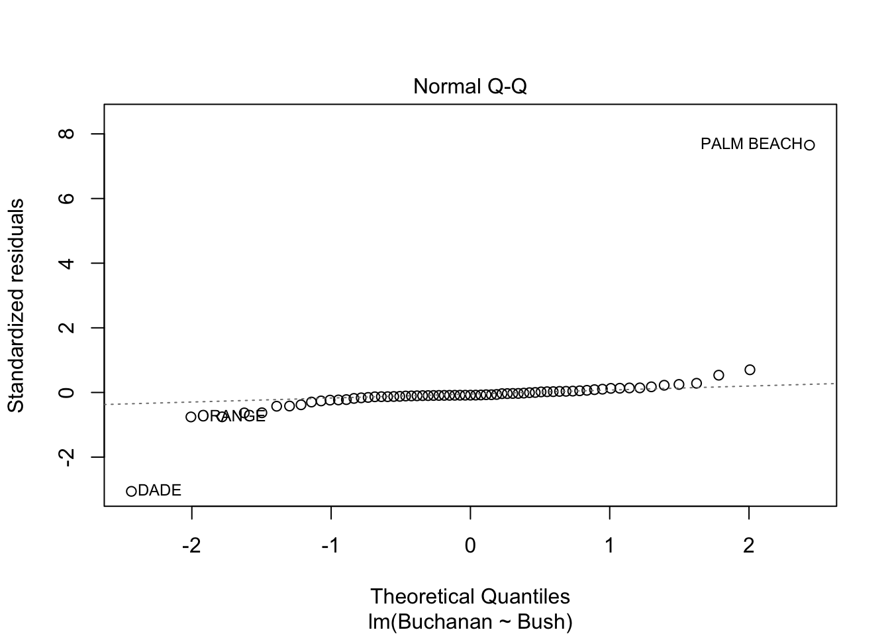
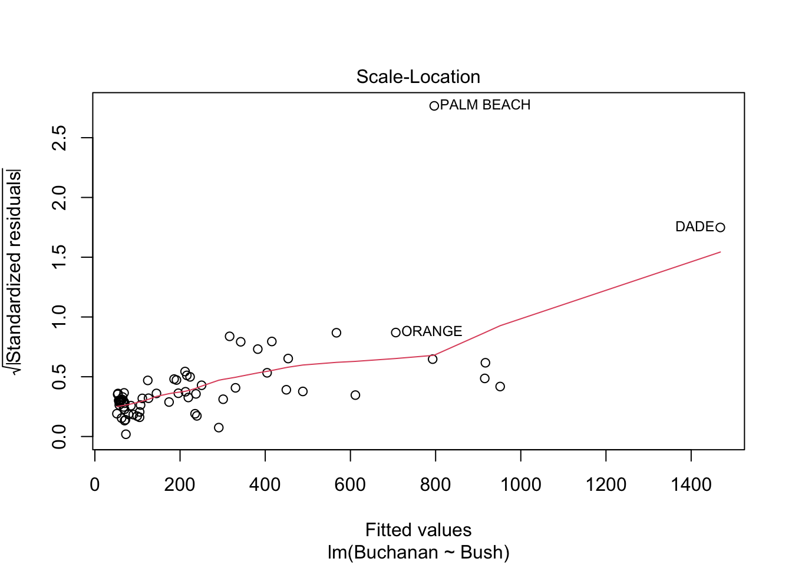
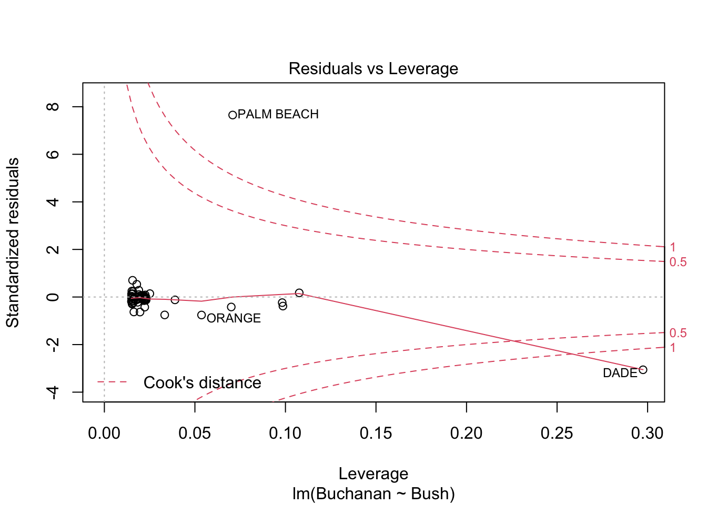
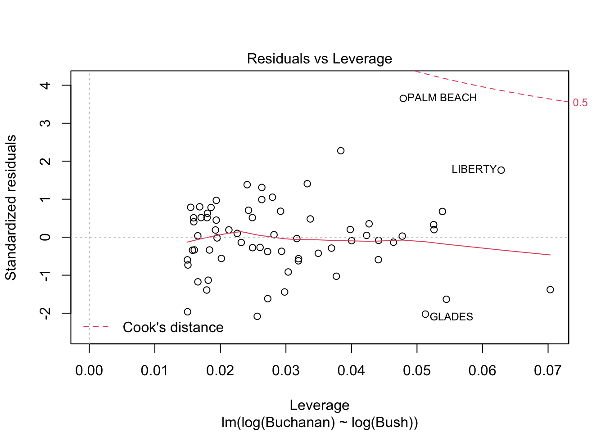

Code
library(smss)
library(alr4)
knitr::opts_chunk$set(echo = TRUE)library(smss)
library(alr4)
knitr::opts_chunk$set(echo = TRUE)A. For backward elimination, which variable would be deleted first? Why?
Beds would be the first variable removed because it has the highest p-value.
B. For forward selection, which variable would be added first? Why?
Size would be the first variable added because in the correlation matrix it has the highest correlation with Price which translates to the lowest p-value.
C. Why do you think that BEDS has such a large P-value in the multiple regression model, even though it has a substantial correlation with PRICE?
Even though Beds has a substantial correlation with price, it could be that there is a confounding variable that is raising the correlation. Beds has the highest correlation with Size, which has the highest correlation with Price, so it could be that the Size variable is interfering with the true correlation between Beds and Price.
D. Using software with these four predictors, find the model that would be selected using each criterion:
m1 <- lm(formula = P ~ S, data = house.selling.price.2)Error in is.data.frame(data): object 'house.selling.price.2' not foundm2 <- lm(formula = P ~ S + New, data = house.selling.price.2)Error in is.data.frame(data): object 'house.selling.price.2' not foundm3 <- lm(formula = P ~ S + New + Ba, data = house.selling.price.2)Error in is.data.frame(data): object 'house.selling.price.2' not foundm4 <- lm(formula = P ~ S + New + Ba + Be, data = house.selling.price.2)Error in is.data.frame(data): object 'house.selling.price.2' not foundprint("M1")[1] "M1"summary(m1)$r.squaredError in summary(m1): object 'm1' not foundsummary(m1)$adj.r.squaredError in summary(m1): object 'm1' not foundprint(PRESS(m1))Error in PRESS(m1): could not find function "PRESS"print(AIC(m1))Error in AIC(m1): object 'm1' not foundprint(BIC(m1))Error in BIC(m1): object 'm1' not foundprint("M2")[1] "M2"summary(m2)$r.squaredError in summary(m2): object 'm2' not foundsummary(m2)$adj.r.squaredError in summary(m2): object 'm2' not foundprint(PRESS(m2))Error in PRESS(m2): could not find function "PRESS"print(AIC(m2))Error in AIC(m2): object 'm2' not foundprint(BIC(m2))Error in BIC(m2): object 'm2' not foundprint("M3")[1] "M3"summary(m3)$r.squaredError in summary(m3): object 'm3' not foundsummary(m3)$adj.r.squaredError in summary(m3): object 'm3' not foundprint(PRESS(m3))Error in PRESS(m3): could not find function "PRESS"print(AIC(m3))Error in AIC(m3): object 'm3' not foundprint(BIC(m3))Error in BIC(m3): object 'm3' not foundprint("M4")[1] "M4"summary(m4)$r.squaredError in summary(m4): object 'm4' not foundsummary(m4)$adj.r.squaredError in summary(m4): object 'm4' not foundprint(PRESS(m4))Error in PRESS(m4): could not find function "PRESS"print(AIC(m4))Error in AIC(m4): object 'm4' not foundprint(BIC(m4))Error in BIC(m4): object 'm4' not foundE. Explain which model you prefer and why. I prefer the model that uses Size, New, and Bath. Given the original correlation matrix, and observing the p-values of the different models has shown these three variables to have high correlation to price.
A. Fit a multiple regression model with the Volume as the outcome and Girth and Height as the explanatory variables
m1 <- lm(formula = Volume ~ Girth + Height, data = trees)
summary(m1)
Call:
lm(formula = Volume ~ Girth + Height, data = trees)
Residuals:
Min 1Q Median 3Q Max
-6.4065 -2.6493 -0.2876 2.2003 8.4847
Coefficients:
Estimate Std. Error t value Pr(>|t|)
(Intercept) -57.9877 8.6382 -6.713 2.75e-07 ***
Girth 4.7082 0.2643 17.816 < 2e-16 ***
Height 0.3393 0.1302 2.607 0.0145 *
---
Signif. codes: 0 '***' 0.001 '**' 0.01 '*' 0.05 '.' 0.1 ' ' 1
Residual standard error: 3.882 on 28 degrees of freedom
Multiple R-squared: 0.948, Adjusted R-squared: 0.9442
F-statistic: 255 on 2 and 28 DF, p-value: < 2.2e-16B. Run regression diagnostic plots on the model. Based on the plots, do you think any of the regression assumptions is violated?
plot(m1)



We can see from the Scale-Location plot that the assumption of equal variance plot is likely not met, as the line deviates on the plot rather than remaining generally horizontal throughout. Additionally, there is one overly influential data point in the model, as shown by the Residuals vs Leverage plot.
A. Run a simple linear regression model where the Buchanan vote is the outcome and the Bush vote is the explanatory variable. Produce the regression diagnostic plots. Is Palm Beach County an outlier based on the diagnostic plots? Why or why not?
data("florida")
m1 <- lm(Buchanan ~ Bush, data = florida)
plot(m1)



Palm Beach is an outlier based on the diagnostic plots because the plots show Palm Beach plotted far outside the average line on all 4 plots.
B. Take the log of both variables (Bush vote and Buchanan Vote) and repeat the analysis in (A.) Does your findings change?
m1 <- lm(log(Buchanan) ~ log(Bush), data = florida)
plot(m1)



Taking the log of both variables does place Palm Beach outside Cook’s distance, but it’ otherwise it’s still close to it. Given the nearness to Cook’s distance and otherwise still being plotted far outside the average on all plots, I would still consider Palm Beach an outlier.